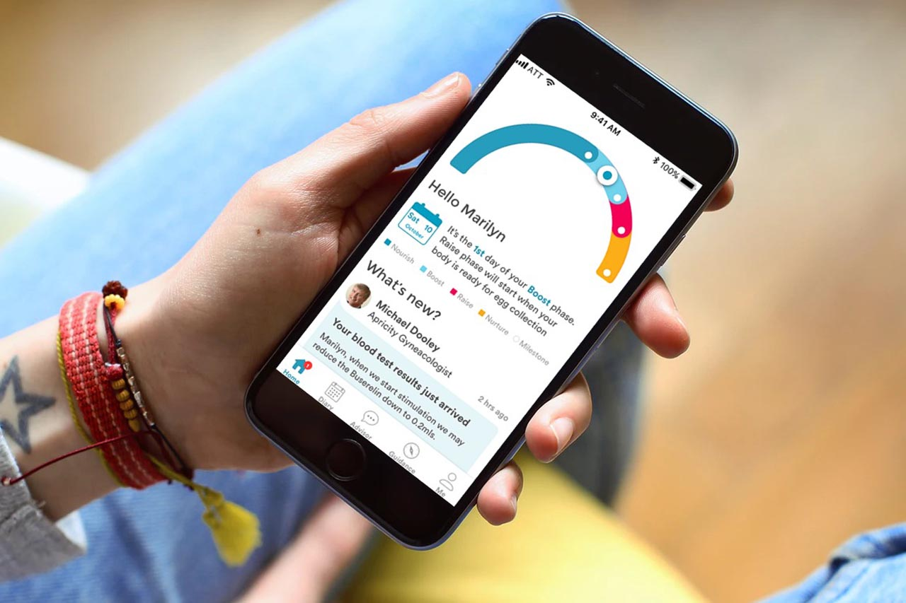
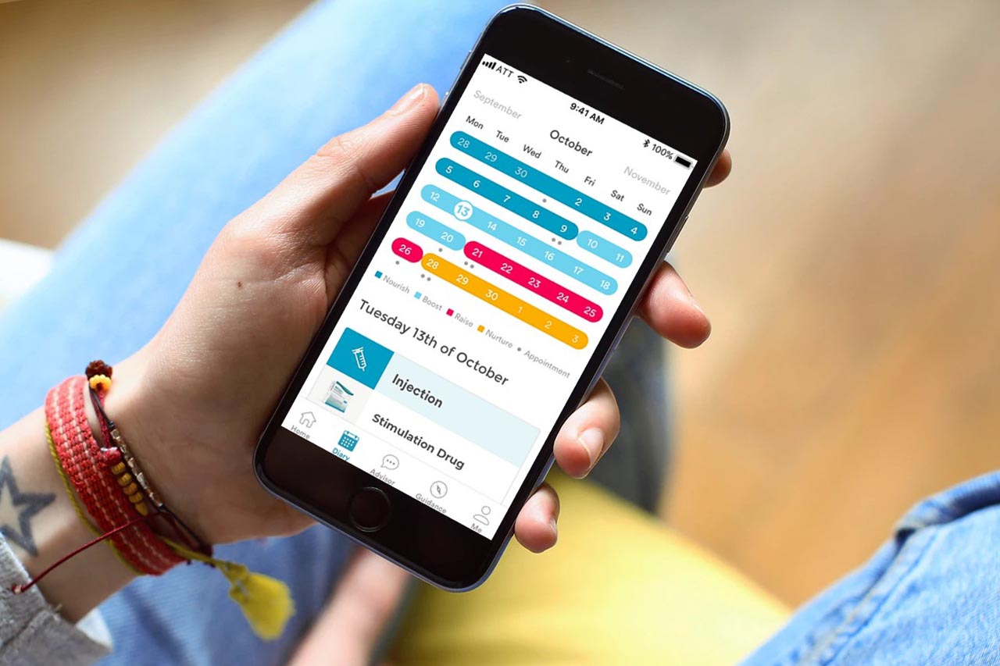
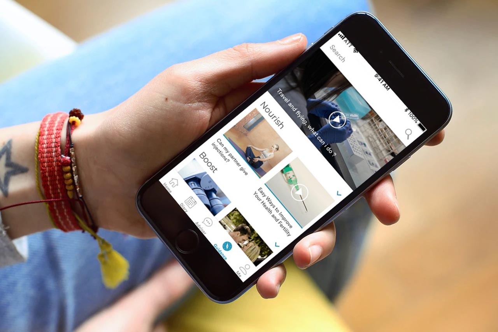

<div id="ajax-page" class="ajax-page-content">
  <div class="ajax-page-wrapper">
    <div class="ajax-page-nav">
      <div class="nav-item ajax-page-prev-next">
        <a class="ajax-page-load" href="portfolio-ing.html"><i class="lnr lnr-chevron-left"></i></a>
        <a class="ajax-page-load" href="portfolio-yuso.html"
          ><i class="lnr lnr-chevron-right"></i
        ></a>
      </div>
      <div class="nav-item ajax-page-close-button">
        <a id="ajax-page-close-button" href="#"
          ><i class="lnr lnr-cross"></i
        ></a>
      </div>
    </div>

    <div class="ajax-page-title">
      <h1>Apricity - Principal Engineer, Lead Tech, Front Expert</h1>
    </div>

    <div class="row">
      <div class="col-sm-7 col-md-7 portfolio-block">
        <div class="owl-carousel portfolio-page-carousel">
          <div class="item">
            
          </div>
          <div class="item">
            
          </div>
          <div class="item">
            
          </div>
        </div>

        <div class="portfolio-page-video embed-responsive embed-responsive-16by9">
          <iframe class="embed-responsive-item" src="https://player.vimeo.com/video/325462441?autoplay=0"></iframe>
        </div>
        <!--
                <div class="portfolio-page-image">
                    
                </div>
                -->

        <script type="text/javascript">
          jQuery(document).ready(function($) {
            $(".portfolio-page-carousel").owlCarousel({
              smartSpeed: 1200,
              items: 1,
              loop: true,
              dots: true,
              nav: true,
              navText: false,
              margin: 10
            });
          });
        </script>
      </div>

      <div class="col-sm-5 col-md-5 portfolio-block">
        <!-- Project Description -->
        <div class="project-description">
          <div class="block-title">
            <h3>Description</h3>
          </div>
          <ul class="project-general-info">
            <li>
              <p>
                <i class="fa fa-globe"></i>
                <a href="https://www.apricity.life/" target="_blank"
                  >apricity.life</a
                >
              </p>
            </li>
          </ul>

          <p class="text-justify">
              Apricity is a companion for personalised fertility treatment. 
              Tailored for specific needs and location, and with caring support via a mobile app.
              It requires also lot of tools for advisors to perfeclty follow treatments (drugs, appointments, ...).
          </p>
          <p class="text-justify">
          Activity :
            <ul>
              <li>Designing and building all software solutions for a virtual fertility clinic from ground up</li>
              <ul>
                <li>Medical platform, to follow patient treatments</li>
                <li>Patient companion app, that provide a chat, calendar and guidance</li>
                <li>Website, that allow provide activity visibility and patient to pay for treatments</li>
              </ul>
              <li>Defining, validating architecture, best practices, standards from front to back
              </li>
              <li>Promote and develop the skills of engineers around best practices, craftsmanship, testing, code coverage, designing systems and robust architecture
              </li>
              <li>Setting up a design system and conduct his adoption and autonomy
              </li>
              <li>Managing 2 teams composed of each 1 lead and 2 engineers
              </li>
              <li>Working with product team to analyse features and propose technical and design solutions and their respective macro estimations
              </li>
              <li>Maintain a visual representation of all technical elements (architectures, workflows, skills matrix, …)
              </li>
              <li>Daily practice of English : team members in UK, back-end users, clients
              </li>
            </ul>
          </p>
          <!-- /Project Description -->

          <!-- Technology -->
          <div class="tags-block">
            <div class="block-title">
              <h3>Technology</h3>
            </div>
            <ul class="tags">
              <li><a>React</a></li>
              <li><a>Flutter</a></li>
              <li><a>Node.js</a></li>
              <li><a>Typescript</a></li>
            </ul>
          </div>
          <!-- /Technology -->
        </div>
        <!-- Project Description -->
      </div>
    </div>
  </div>
</div>
